Over the years, many people have installed Dillo on all kinds of computers
and platforms. This page collects some pictures and screenshots. Send yours by
email to dillo-dev@mailman3.com.
Devices
Pictures of Dillo running on a given device.
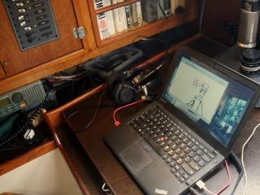
2024-05-06 -
Dillo from a tiny solar powered sailboat anchored in Smuggler's Cove
[1]
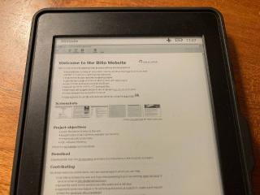
2024-03-29 -
Dillo 3.1-dev running on a Kindle PW Gen 4 with Debian
[1]
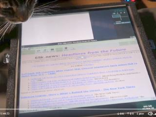
2021-11-25 -
Dillo 3.0.5 running on a voting machine with Debian
[1,
2].
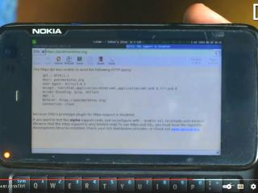
2019-07-15 -
Dillo running on a Nokia N900 with PostmarketOS
[1]
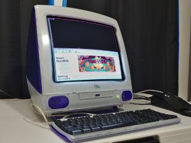
2019-05-25 -
Dillo running on an iMac G3 with OpenBSD 6.5
[1]
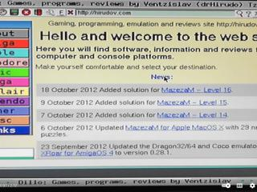
2012-11-04 -
Dillo running on a PlayStation 2 Slim with BlackRhino GNU/Linux
[1,
2].
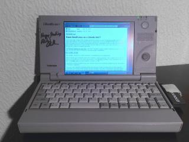
2012-12-13 -
Dillo running on a Libretto 50CT (24 MiB RAM) with DSL
[1,
2].
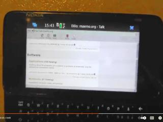
2012-03-22 -
Dillo running on Nokia N900 with Maemo
[1,
2].
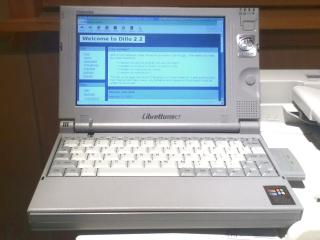
2011-11-17 -
Dillo 2.2 running on a Libretto 110CT with Gentoo
[1].
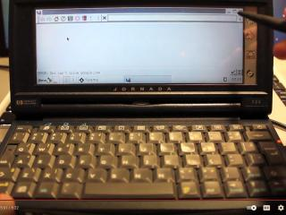
2011-05-03 -
Dillo 2.2 running on a HP Jornada 720
[1].
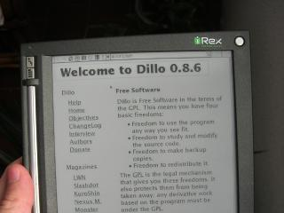
2006-12-17 -
Dillo 0.8.6 running on an iLiad iRex e-Reader
[1].
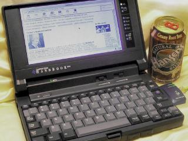2005-04-19 -
Dillo running on a Gateway Handbook 486
[1].
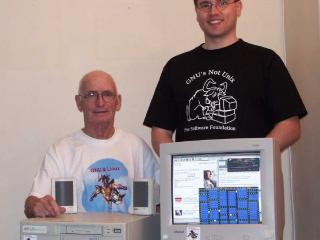2003-10-19 -
Dillo 0.7.3 running on a 486SX33 CPU (16MiB of RAM) with DSL
[1].
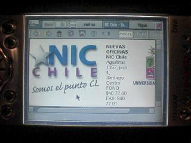2002-03-20 -
Dillo running on an Ipaq 3700 (64MiB of RAM) with Familiar Linux
[1].
Screenshots
Screenshots of Dillo taken from the device itself.
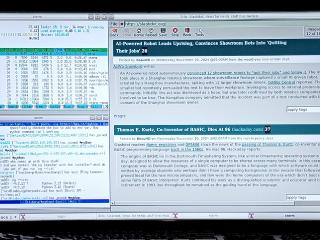2024-11-20 -
Dillo 3.1.1 on a FPGA RISC-V CPU at 100 MHz with 64 MiB of RAM.
[1,
2].
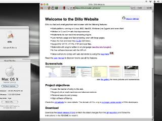
2024-05-05 -
Dillo 3.1.0 running on Mac OS X Tiger 10.4
[1].
2024-03-24 -
Dillo 3.1-dev running on x86 with Windows 11 via Cygwin
[1].
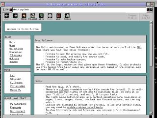2023-12 -
Dillo 3.1-dev running on
ARAnyM, an
Atari simulator
[1,
2].
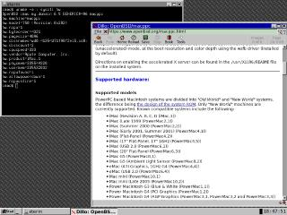
2019-05-25 -
Dillo running on PowerPC with OpenBSD 6.5
[1].
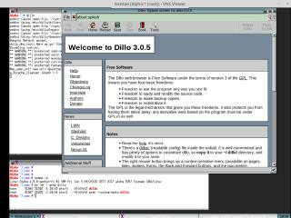
2018-11-02 -
Dillo 3.0.5 running on emulated Alpha with Gentoo
[1].
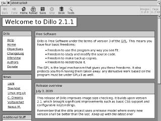
2009-07-10 -
Dillo 2.1.1 running on the iLiad e-Reader
[1,
2].
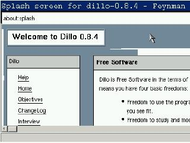
2007-12-09 -
Dillo 0.8.4 running on a TomTom GPS
[1].
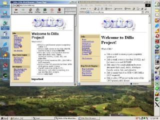2005-01-11 -
Dillo 0.8.4 running on Windows 2000 via Cygwin
[1].